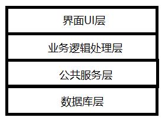
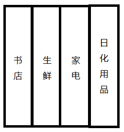
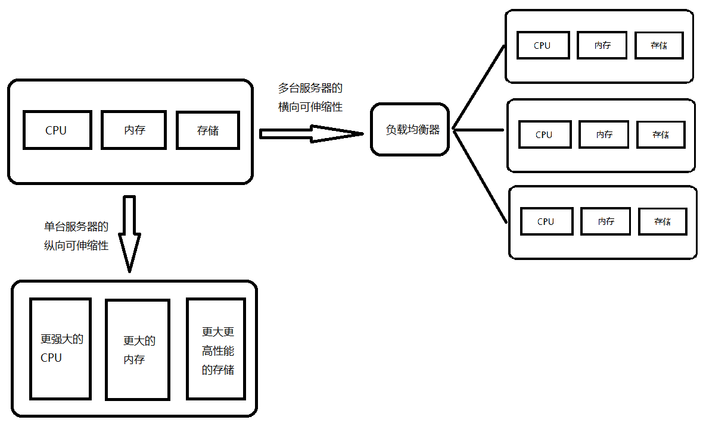
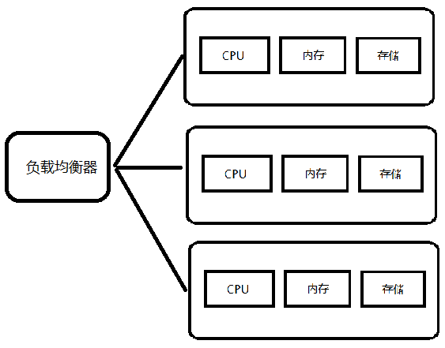

- 00 开篇词 从“小工”到“专家”，我的软件测试修炼之道.md.html
- 01 你真的懂测试吗？从“用户登录”测试谈起.md.html
- 02 如何设计一个“好的”测试用例？.md.html
- 03 什么是单元测试？如何做好单元测试？.md.html
- 04 为什么要做自动化测试？什么样的项目适合做自动化测试？.md.html
- 05 你知道软件开发各阶段都有哪些自动化测试技术吗？.md.html
- 06 你真的懂测试覆盖率吗？.md.html
- 07 如何高效填写软件缺陷报告？.md.html
- 08 以终为始，如何才能做好测试计划？.md.html
- 09 软件测试工程师的核心竞争力是什么？.md.html
- 10 软件测试工程师需要掌握的非测试知识有哪些？.md.html
- 11 互联网产品的测试策略应该如何设计？.md.html
- 12 从0到1：你的第一个GUI自动化测试.md.html
- 13 效率为王：脚本与数据的解耦 + Page Object模型.md.html
- 14 更接近业务的抽象：让自动化测试脚本更好地描述业务.md.html
- 15 过不了的坎：聊聊GUI自动化过程中的测试数据.md.html
- 16 脑洞大开：GUI测试还能这么玩（Page Code Gen + Data Gen + Headless）？.md.html
- 17 精益求精：聊聊提高GUI测试稳定性的关键技术.md.html
- 18 眼前一亮：带你玩转GUI自动化的测试报告.md.html
- 19 真实的战场：如何在大型项目中设计GUI自动化测试策略.md.html
- 20 与时俱进：浅谈移动应用测试方法与思路.md.html
- 21 移动测试神器：带你玩转Appium.md.html
- 22 从0到1：API测试怎么做？常用API测试工具简介.md.html
- 23 知其然知其所以然：聊聊API自动化测试框架的前世今生.md.html
- 24 紧跟时代步伐：微服务模式下API测试要怎么做？.md.html
- 25 不破不立：掌握代码级测试的基本理念与方法.md.html
- 26 深入浅出之静态测试方法.md.html
- 27 深入浅出之动态测试方法.md.html
- 28 带你一起解读不同视角的软件性能与性能指标.md.html
- 29 聊聊性能测试的基本方法与应用领域.md.html
- 30 工欲善其事必先利其器：后端性能测试工具原理与行业常用工具简介.md.html
- 31 工欲善其事必先利其器：前端性能测试工具原理与行业常用工具简介.md.html
- 32 无实例无真相：基于LoadRunner实现企业级服务器端性能测试的实践（上）.md.html
- 33 无实例无真相：基于LoadRunner实现企业级服务器端性能测试的实践（下）.md.html
- 34 站在巨人的肩膀：企业级实际性能测试案例与经验分享.md.html
- 35 如何准备测试数据？.md.html
- 36 浅谈测试数据的痛点.md.html
- 37 测试数据的“银弹”- 统一测试数据平台（上）.md.html
- 38 测试数据的“银弹”- 统一测试数据平台（下）.md.html
- 39 从小作坊到工厂：什么是Selenium Grid？如何搭建Selenium Grid？.md.html
- 40 从小工到专家：聊聊测试执行环境的架构设计（上）.md.html
- 41 从小工到专家：聊聊测试执行环境的架构设计（下）.md.html
- 42 实战：大型全球化电商的测试基础架构设计.md.html
- 43 发挥人的潜能：探索式测试.md.html
- 44 测试先行：测试驱动开发(TDD).md.html
- 45 打蛇打七寸：精准测试.md.html
- 46 安全第一：渗透测试.md.html
- 47 用机器设计测试用例：基于模型的测试.md.html
- 48 优秀的测试工程师为什么要懂大型网站的架构设计？.md.html
- 49 深入浅出网站高性能架构设计.md.html
- 50 深入浅出网站高可用架构设计.md.html
- 51 深入浅出网站伸缩性架构设计.md.html
- 52 深入浅出网站可扩展性架构设计.md.html
- 测试专栏特别放送 浅谈全链路压测.md.html
- 测试专栏特别放送 答疑解惑第一期.md.html
- 测试专栏特别放送 答疑解惑第七期.md.html
- 测试专栏特别放送 答疑解惑第三期.md.html
- 测试专栏特别放送 答疑解惑第二期.md.html
- 测试专栏特别放送 答疑解惑第五期.md.html
- 测试专栏特别放送 答疑解惑第六期.md.html
- 测试专栏特别放送 答疑解惑第四期.md.html
- 结束语 不是结束，而是开始.md.html
- 捐赠
51 深入浅出网站伸缩性架构设计
你好，我是茹炳晟，今天我分享的主题是：深入浅出网站伸缩性架构设计。
目前，很多测试工程师，甚至是开发工程师都一直分不清楚可伸缩性和可扩展性这两个概念，主要原因是从字面上看这两个概念的确有相似之处。但实际情况呢，可伸缩性和可扩展性这两两个概念的含义相差十万八千里，根本不具有任何可比性。
所以，我将通过两篇文章来和你分享，网站的伸缩性和可扩展性架构设计到底是什么，以及在设计测试用例时需要注意哪些点。
可伸缩性和可扩展性的概念区别
可伸缩性翻译自Scalability，指的是通过简单地增加硬件配置而使服务处理能力呈线性增长的能力。最简单直观的例子，就是通过在应用服务器集群中增加更多的节点，来提高整个集群的处理能力。
而可扩展性翻译自Extensibility，指的是网站的架构设计能够快速适应需求的变化，当需要增加新的功能实现时，对原有架构不需要做修改或者做很少的修改就能够快速满足新的业务需求。
接下来，我就先和你分享下网站的可伸缩性架构。而关于网站的可扩展性架构设计，我会在下一篇文章中和你详细分享。
分层的可伸缩性架构
网站的可伸缩性架构设计主要包含两个层面的含义：
- 一个是指，根据功能进行物理分离来实现伸缩；
- 另一个是指，物理分离后的单一功能通过增加或者减少硬件来实现伸缩。
在根据功能本身进行物理分离来实现伸缩的过程中，还有两种不同的实现方式：
- 一种是功能的“横切”，比如一个电商网站的购物功能从上至下就可以分为界面UI层、业务逻辑处理层、公共服务层和数据库层，如果我们将这些层区分开来，每个层就可以独立实现可伸缩；

图1 功能“横切”示意图
- 另一种是功能的“纵切”，比如一个电商网站可以根据经营的业务范围（比如书店、生鲜、家电和日化用品等）进行功能模块的划分，划分后的每个业务模块都可以独立地根据业务流量和压力来实现最适合自己规模的伸缩性设计。

图2 功能“纵切”示意图
同样地，对于单一功能可以通过增加或者减少硬件来实现的可伸缩性，也有两种不同的实现方式：
- 一种是纵向的可伸缩性，指的是通过增加单一服务器上的硬件资源来提高处理能力。比如，在现有服务器上增加CPU、内存，或者在现有的RAID/SAN存储中增加硬盘等。- 传统软件企业使用的“宠物”模式，就是通过这个思路来实现有限的可伸缩性，我们往往把这种方式的伸缩性称为单节点的可伸缩性。显然，在如今海量互联网流量的情况下，想仅仅依赖于某一台服务器来处理各种请求显然是不可能的。
- 另一种是横向的可伸缩性，指的是通过使用服务器集群来实现单一功能的可扩展性。当一台机器不足以处理大量用户并发请求的时候，我们就采用多台机器组成集群来共同负担并发压力。- 这种方式是基于集群的可伸缩性实现的，也是目前最主流的网站可伸缩性方法，也就是我之前提到过的“牲口”模式。很多时候当我们谈及网站的可伸缩性设计时，如果没有特定的上下文或者特指的场景，往往指的都是基于集群的可伸缩性。

图3 单一功能通过增加或者减少硬件来实现的可伸缩性
基于集群的可伸缩性设计，是和网站本身的分层架构设计相对应的：
- 在应用服务器层面有应用服务器集群的可伸缩性架构设计；
- 在缓存服务器层面有缓存服务器的可伸缩性架构设计；
- 在数据库层面有数据库服务器的可伸缩性架构设计。
虽然都是可伸缩性设计，但是由于应用服务器、缓存服务器和数据库服务器本身的架构在设计上就有所区别，加之它们的使用场景不同，使得它们的可伸缩性架构设计就有着巨大的差异。
接下来，我就先简单解释一下这三个层面的可伸缩性设计指的是什么，以及从测试人员的角度来看我们需要关注哪些点。
应用服务器的可伸缩性设计
应用服务器的可伸缩性设计是最直观，也是最容易理解的。当一台应用服务器不足以支撑业务流量的时候，我们就可以用多台服务器来分担业务流量。
但是，为了保证这批服务器对外暴露的是一个统一的节点，我们就需要一个负载均衡器作为统一的窗口来对外提供服务，同时负载均衡器会把实际的业务请求转发给集群中的机器去具体执行。
这里需要特别注意的是，负载均衡器并不是按照你在字面上理解的“均衡”那样，把业务负载平均分配到集群中的各个节点，而是通过负载均衡算法（比如轮询算法、基于加权的轮询算法、最小链接算法等）将用户流量分配到集群机器。从这个意义上说，将负载均衡器称为任务分配器才更合适。

图4 通过负载均衡器实现的应用服务器集群示意图
为了实现线性可伸缩性，我们希望应用本身是无状态的。此时，任何请求都可以在集群中任意节点上来执行，也就是说集群的处理能力将随着节点数量的增多呈现线性增长的态势。
但是，如果应用本身是有状态的，那么就会要求基于一次会话（session）的多次请求都被分配到集群中某一台固定的服务器上去执行。
理解了上述应用服务器集群的可伸缩性架构原理后，我们再从测试人员的角度来想想，应该考虑哪些相关的测试场景。为此，我总结了以下几点供你参考：
- 需要通过压力测试来得出单一节点的负载承受能力；
- 验证系统整体的负载承受能力，是否能够随着集群中的节点数量呈现线性增长；
- 集群中节点的数量是否有上限；
- 新加入的节点是否可以提供和原来节点无差异的服务；
- 对于有状态的应用，是否能够实现一次会话（session）的多次请求都被分配到集群中某一台固定的服务器上；
- 验证负载均衡算法的准确性。
缓存集群的可伸缩性设计
缓存集群的可伸缩性设计，相比应用服务器集群要复杂得多。
传统的缓存服务器集群是无法通过简单地加入新的节点来实现扩容的，其中的根本原因，就要从缓存的核心原理开始讲起了。
假定，一个缓存集群中有3台机器，那么我们在将需要缓存的内容存入缓存集群的过程，包括了这三步：
- 首先，将需要缓存的内容的Key值做Hash运算；
- 然后，将得到的Hash值对3取余数；
- 最后，将缓存内容写入余数所代表的那台服务器。
而此时，如果我们在缓存集群中加入了一台新的机器，也就是说缓存集群中机器的数量变成了4。这时Key的Hash值就应该对4取余，你会发现这么一来，原本已经缓存的绝大多数内容就都失效了，必须重构整个缓存集群。而这，显然不能被接受。
为了解决上述这个问题，使得缓存集群也可以做到按需、高效地伸缩，那就必须采用更为先进的Hash一致性算法。这个算法可以很巧妙地解决缓存集群的扩容问题，保证了新增机器节点的时候大部分的缓存不会失效。
如果你想了解Hash一致性算法更详细的细节，请自行百度。
同样地，知道了缓存集群扩容的实现细节后，我们再从测试人员的角度出发，看看需要额外关注哪些点。这里，我总结了以下几点供你参考：
- 针对缓存集群中新增节点的测试，验证其对原有缓存的影响是否足够小；
- 验证系统冷启动完成后，缓存中还没有任何数据的时候，如果此时网站负载较大，数据库是否可以承受这样的压力；
- 需要验证各种情况下，缓存数据和数据库数据的一致性；
- 验证是否已经对潜在的缓存穿透攻击进行了处理，因为如果有人刻意利用这个漏洞来发起海量请求的话，就有可能会拖垮数据库。
数据库的可伸缩性设计
从实际应用的角度来看，数据库的可伸缩性设计主要有四种方式：
第一种方式是目前最常用的业务分库，也就是从业务上将一个庞大的数据库拆分成多个不同的数据库。比如，对于电商网站来说，它们可以考虑将用户相关的表放在一个数据库中，而商品相关的表放在另一个数据库中。
这种方式本身也符合模块设计分而治之的思想，但最大的问题是跨数据库数据的join操作只能通过代码在内存中完成，实现代价和成本都比较高。这种方式目前在一些中大型电商有不同程度的应用。
第二种方式是读写分离的数据库设计，其中主库用于所有的写操作，从库用于所有的读操作，然后主从库会自动进行数据同步操作。这样一来，主库就可以根据写操作来优化性能，而从库就可以根据读操作来优化性能。
但是，这个架构最大的问题在于可能出现数据不一致的情况。比如，写入的数据没能及时同步到从库，就可能会出现数据不一致。另外，这种读写分离的设计对数据库可伸缩性的贡献来讲，比较有限，很难从根本上解决问题。
这种方式主要应用在中小型规模的网站中，同时读写分离的设计也通常会和业务分库的设计一起采用，来提高业务分库后的数据库性能。
为了进一步提高数据库的可伸缩性，于是就出现了第三种数据库的可伸缩性设计：分布式数据库。分布式数据库同样存在数据不一致的问题，并且，这个方法通常只在单个数据表异常庞大的时候才会被采用，否则我还是更推荐业务分库的方法。这种数据库设计可以说是比较主流的应对大规模高并发应用的数据库方案。
第四种方式则是完全颠覆了传统关系型数据数据库的NoSQL设计。NoSQL放弃了事务一致性，并且天生就是为了可伸缩性而设计的，所以在可伸缩性方面具有天然优势。因此，在互联网领域被广泛使用。
从测试的角度出发，无论是数据库架构哪种设计，我们一般都会从以下几个方面来考虑测试用例的设计：
- 正确读取到刚写入数据的延迟时间；
- 在数据库架构发生改变，或者同样的架构数据库参数发生了改变时，数据库基准性能是否会发生明显的变化；
- 压力测试过程中，数据库服务器的各项监控指标是否符合预期；
- 数据库在线扩容过程中对业务的影响程度；
- 数据库集群中，某个节点由于硬件故障对业务的影响程度。
总结
首先，我和你分享了可伸缩性翻译自Scalability，而可扩展性翻译自Extensibility，从英文单词的含义上我们就可以看出这两个概念间的差异了。
在我看来，网站的可伸缩性架构设计主要包含两个层面的含义，一个是指根据功能进行物理分离来实现伸缩，另一个是指物理分离后的单一功能通过增加或者减少硬件来实现伸缩。
从整体架构的角度来看，应用服务器、缓存集群和数据库服务器各自都有适合自己的可伸缩性设计策略：应用服务器主要通过集群来实现可伸缩性，缓存集群主要通过Hash一致性算法来实现，数据库可以通过业务分库、读写分离、分布式数据库以及NoSQL来实现可伸缩性。
而相应的理解了网站的可伸缩性架构设计后，我们在开展测试时，就可以非常自信地设计出有针对性的测试用例了。
思考题
你所接触的被测系统，是否采用了可伸缩性的架构设计方案？在具体开展测试的时候，你又是如何设计测试用例的呢？
感谢你的收听，欢迎你给我留言一起讨论。
© 2019 - 2023 Liangliang Lee. Powered by gin and hexo-theme-book.